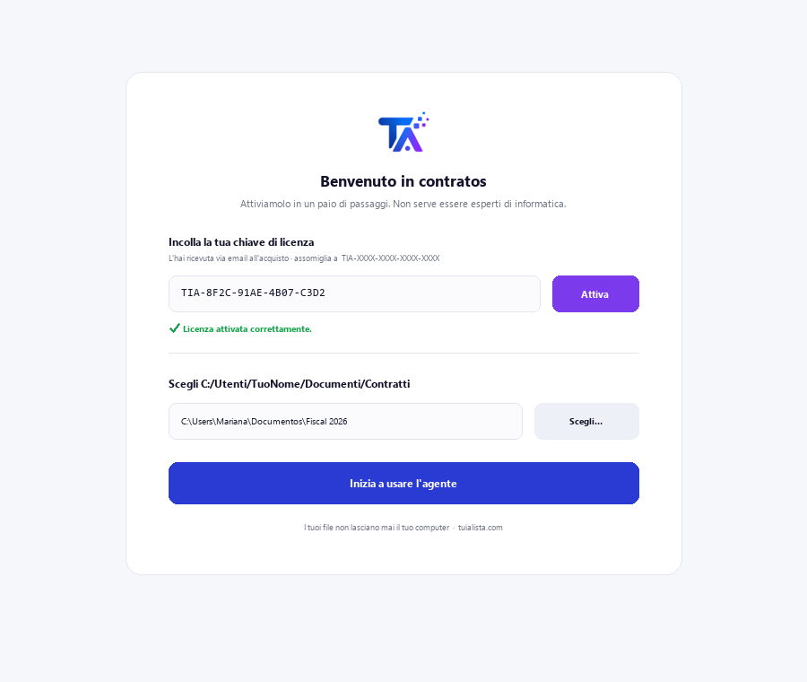
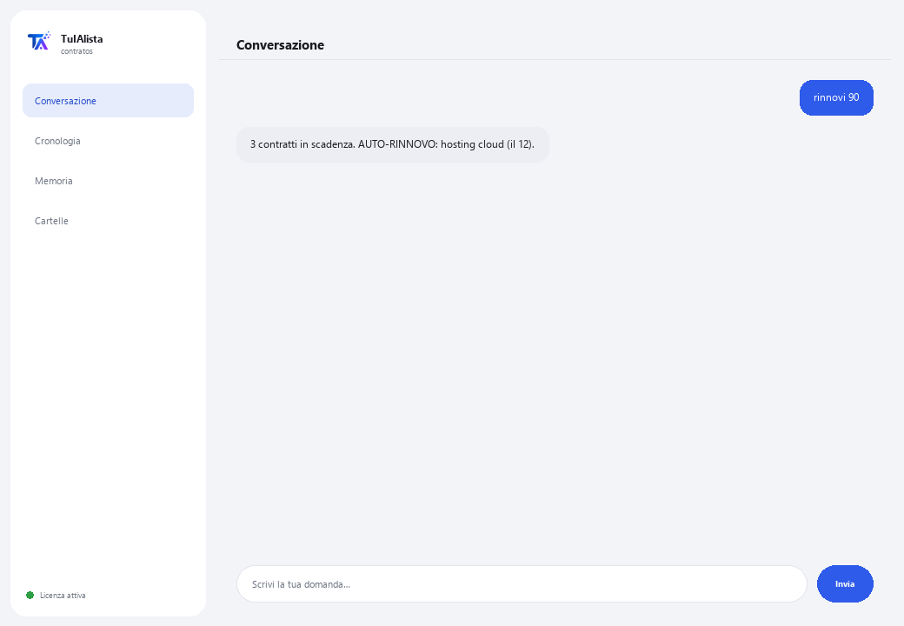

Agente Contratti e Rinnovi
Legge i tuoi contratti per te, ti avvisa cosa si rinnova automaticamente e rileva clausole rischiose prima che ti costino denaro.
Cosa risolve e cosa ti serve?
Molte aziende perdono denaro per cose che erano scritte in un contratto ma che nessuno ha più riletto: un servizio che si rinnova automaticamente, una penale per la cancellazione, un aumento di prezzo automatico. Questo agente legge i tuoi contratti e ti avvisa dell'importante prima che sia tardi.
- Ti serve: la tua chiave di licenza (TIA-XXXX-XXXX-XXXX-XXXX) e la cartella con i tuoi contratti (PDF, Word o testo). Niente Python né conoscenze tecniche.
- Primo risultato in meno di 5 minuti: installi, attivi, scegli la tua cartella ed esegui rinnovi per vedere cosa sta per scadere.
- I tuoi contratti non lasciano mai il tuo computer — l'analisi gira in locale.
soporte@tuialista.com o visita tuialista.com/soporte — di solito rispondiamo lo stesso giorno lavorativo.1 Cosa fa questo agente
Gli indichi la cartella dove conservi i tuoi contratti e lui:
- Li legge tutti (PDF, Word e testo), senza che tu debba aprirli uno per uno.
- Ti avvisa quali contratti stanno per scadere o rinnovarsi nei prossimi giorni.
- Rileva 10 tipi di clausole rischiose e ti dice quali sono delicate.
- Ti dà un riepilogo chiaro di qualsiasi contratto in pochi secondi.
- Risponde alle tue domande in linguaggio normale: “quale dei miei contratti si rinnova automaticamente?”
Risultato: smetti di avere sorprese e hai tempo per negoziare o annullare prima della scadenza.
2 Installazione (2 minuti)
Per Windows. Non serve internet permanente né caricare nulla sul cloud.
Scarica l'installer da tuialista.com/descargar (agente Contratti) e aprilo. Crea un collegamento sul desktop con il logo — non richiede Python né terminale.
Doppio clic sulla nuova icona. Incolla la tua chiave di licenza (ricevuta via email all'acquisto) e premi Attiva. Vedrai un segno di spunta verde quando è valida.
Seleziona la cartella con i tuoi contratti e premi Inizia a usare l'agente. La prossima volta si avvia direttamente — ricorda la tua chiave e la tua cartella.

3 Come usarlo
L'agente apre una finestra di chat, come un'app di messaggistica — non è uno schermo nero da programmatore. Scrivi il tuo comando o la tua domanda nella casella di testo in basso, premi Invia (o Invio), e la risposta appare come un messaggio, proprio come in questa immagine reale:

I comandi seguenti sono le parole che puoi scrivere nella stessa casella di testo:
> rinnovi [giorni]Contratti con date di rinnovo o scadenza imminenti — 60 giorni di default. Evidenzia “AUTO-RINNOVO” quelli che si rinnovano automaticamente se non li annulli in tempo. Es.: rinnovi 90.
> riepilogo <file>Riepilogo esecutivo del contratto in linguaggio chiaro: di cosa tratta, le parti, il denaro, le date e gli avvisi.
> rischi <file>Solo le clausole rischiose rilevate, con il loro livello di allerta (ALTO, MEDIO, BASSO).
> analizzare <file>Estrazione completa: parti, date, importi, se ha auto-rinnovo e tutte le sue clausole di rischio.
> domanda libera?Scrivi qualsiasi domanda in linguaggio naturale, es.: quali dei miei contratti hanno una penale se li annullo in anticipo?
> esciTermina la sessione (funziona anche exit).
4 Esempi di uso comune
Rilevare contratti che si rinnovano automaticamente
Il caso più costoso: un servizio che si rinnova per un altro anno perché nessuno ha avvisato in tempo. rinnovi 120 — controlla quelli con “AUTO-RINNOVO”.
Rivedere i rischi prima di firmare
Ti hanno mandato un nuovo contratto: salvalo nella tua cartella e rischi nuovo-contratto.pdf — in pochi secondi vedi se contiene esclusiva, penali o giurisdizione all'estero.
Preparare una riunione di rinnovi
rinnovi 60 → riepilogo contratto-chiave.pdf
Trovare un dato senza aprire ogni file
quanto pago mensilmente nel contratto cloud e quando aumenta?
5 Domande frequenti
I miei contratti vengono caricati su internet?
Ho bisogno di internet per usarlo?
Quali formati accetta?
Può leggere un PDF scansionato?
Sostituisce il mio avvocato?
Quanti contratti può gestire?
I dati mostrati sono 100% esatti?
In quale lingua mi risponde?
Posso cambiare la cartella?
Cosa significano ALTO, MEDIO e BASSO nei rischi?
6 Risoluzione dei problemi
Non legge un PDF / mostra “PDF non letto”
Mostra “0 contratti indicizzati”
Mostra “Licenza non valida” o chiede di riconnettersi
“Nessun fornitore IA configurato”
Nessuna di queste soluzioni ha risolto il tuo problema? Scrivici direttamente — saremo felici di rivederlo con te.
soporte@tuialista.com o visita tuialista.com/soporte — di solito rispondiamo lo stesso giorno lavorativo.7 Privacy e riservatezza
I tuoi contratti non lasciano mai il tuo computer.
- L'agente legge e analizza i file in locale, sul tuo stesso dispositivo. Non li carica su nessun server né li condivide con nessuno.
- Il rilevamento di rinnovi, importi e clausole di rischio avviene al 100% sul tuo dispositivo, offline.
- L'unica cosa che viaggia su internet è: (1) una verifica che la tua licenza sia attiva — che non include il contenuto dei tuoi contratti —, e (2) quando chiedi un riepilogo o fai una domanda libera, viene inviato un frammento del contratto al motore IA per redigere la risposta.